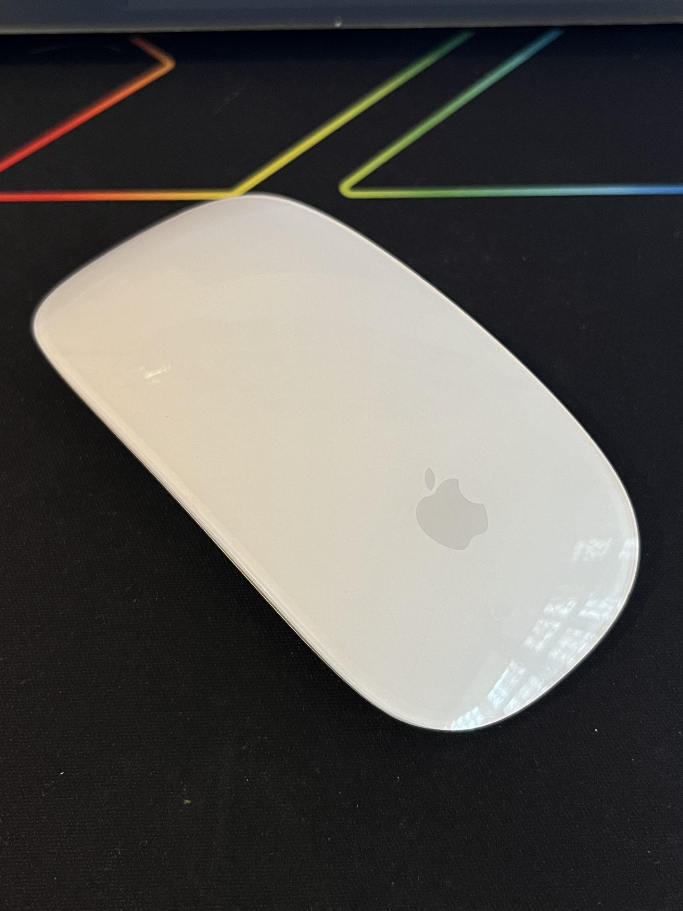
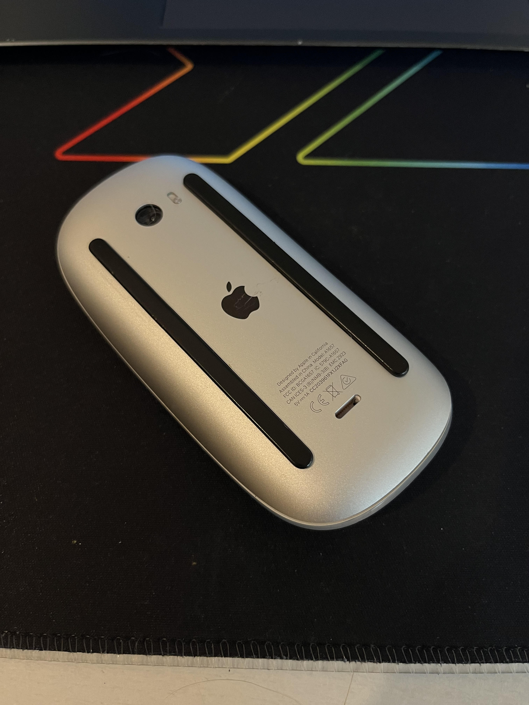

Assignment 1
Good Design
Conteudo
Bad Design
Quando os utilizadores do rato da Apple pretendem carregar o mesmo, é necessário ligar o carregador à parte de trás. Isto impede a sua utilização enquanto está a ser carregado. Bastaria alterar a entrada do carregador, por exemplo, para uma lateral, permitindo que mesmo quando o rato fique sem bateria, o mesmo possa continuar a ser utilizado enquanto carrega.

